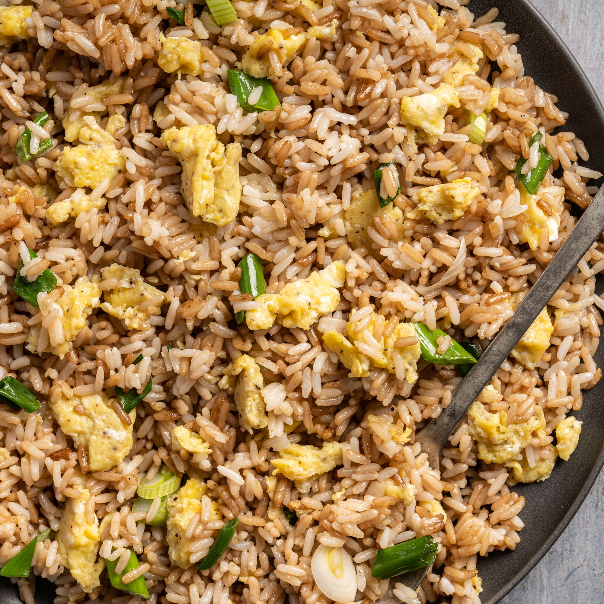

Fried Rice

This is a recipe on making fried rice, there are many types of
fried rices depending on how the culture and the surrounding
food impact how people make fried rice around the world.
Ingredients
Before we start making the fried rice, we first need to collect and prepare all the ingredients needed
- 3 tbsp sesame oil, divided
- 3 large eggs
- Kosher salt
- 2 carrots, diced
- 3 green onions, thinly sliced, white and green
parts divided
- 3 cloves of garlic, minced
- 1 tbsp peeled and minced ginger
- 4 cups cooked leftover rice
- 3/4 cups frozen peas
- 3 tbsp soy sauce
Steps
- Heat a large cast iron skillet over high heat until very hot, about 2 minutes.
Add 1 tablespoon oil.
- Beat egg with 2 teaspoons water and a large pinch salt and add to skillet. Cook, stirring
to form large soft curds, about 30 seconds. Transfer to a plate.
- Return skillet to high heat and add 2 tablespoons oil, the carrots, and whites of the
green onions. Cook until lightly golden, about 2 minutes. Add garlic and ginger and cook,
stirring, until fragrant, 1 minute.
- Add rice, peas, and cooked eggs to skillet. Pour in soy sauce and cook, stirring until
heated through, 1 minute. Season with salt and pepper and stir in the remaining green
onions.